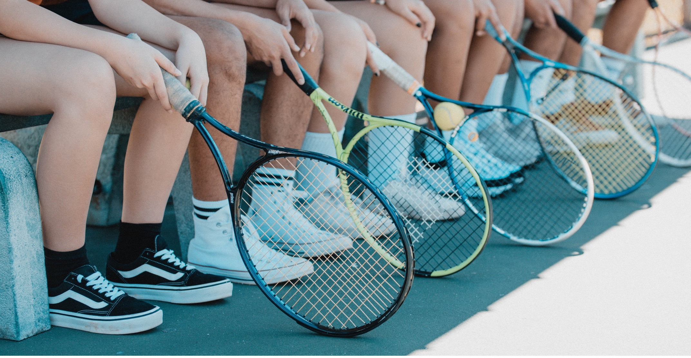

Home
Women's Tennis
Men's Tennis
Contact
Women's Tennis

The 2021-2022 UNC-Chapel Hill women's tennis team roster
“Coach Kalbas is just the best of the best, It's hard to put it into words."
- Carson Tanguilig